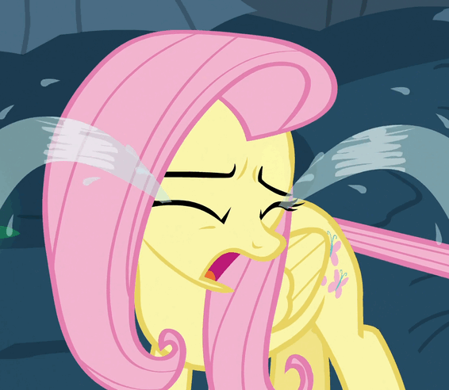
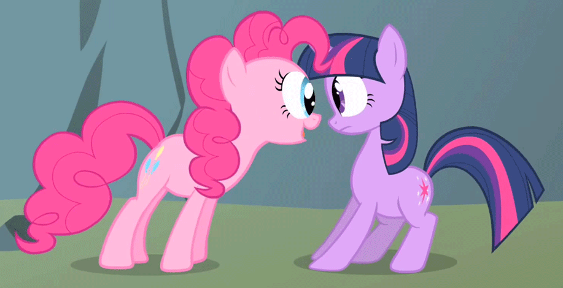

It's not exactly tomorrow. It's the day after tomorrow. I needed another day to be sad. I want to close this.

I cried a lot yesterday. Finally, my house was empty and I laid on my bed with tissues and Tchaikovsky’s 6th symphony playing in the background. I wailed it out. The scattered showers were incredibly weak compared to this hurricane. Hurricane Tears. My neighbors were probably shook. I thought the crying was over after that, I was wrong, but I really did need to cry like that. I'd been holding it in until then.
Today, I had my 8AM Calculus class. Before we started, I asked Dan if I could talk to him after class. He said yes, because he is a great human. I sat through the rest of class and I felt better. Time moved faster. My mind was occupied. It must have been the math. I don’t even like math.
After class, and about thirty minutes ago, I had my talk with Dan. I told him what happened and why it did. I said that we broke up because he was too busy with school. He said it was already tough because of the distance. For some reason, when he said it, the idea was more clear to me. I had known before that his school is very far from mine, but it didn't stick in my brain. I don't know why.
Then I said that we skyped on Thursday, three days before we broke up, and I didn't notice anything different. I was happy to see him like always. He had physics homework and I was keeping him from that. He was too busy for me. And I was too. I had work to do too, but I didn’t because he was so enticing to look at.

Dan asked me if he broke up with me over text. He did. And he said, “that's so Jon.” He's right. It is how he is. I shouldn't be angry at him for not breaking up with me over Skype because that's the kind of person he is. He thought he was making it easier over text. It was actually worse, but I shouldn’t be angry because that wasn't what he intended.
The “that's so Jon” comment made everything make more sense. He isn’t like me. He sucks at texting. He doesn't care about the same things I do. That's what my friend said when I told her that we are incompatible. We don’t like the same things. It makes sense, but it doesn't. We loved each other because we loved who the other person was, not because we were similar.
I remember he said “never change” to me a few times. Now I know that was my problem. I wanted him to change. I wanted him to be more attentive and text me more than he could. I wish I had let him be himself and not push him.